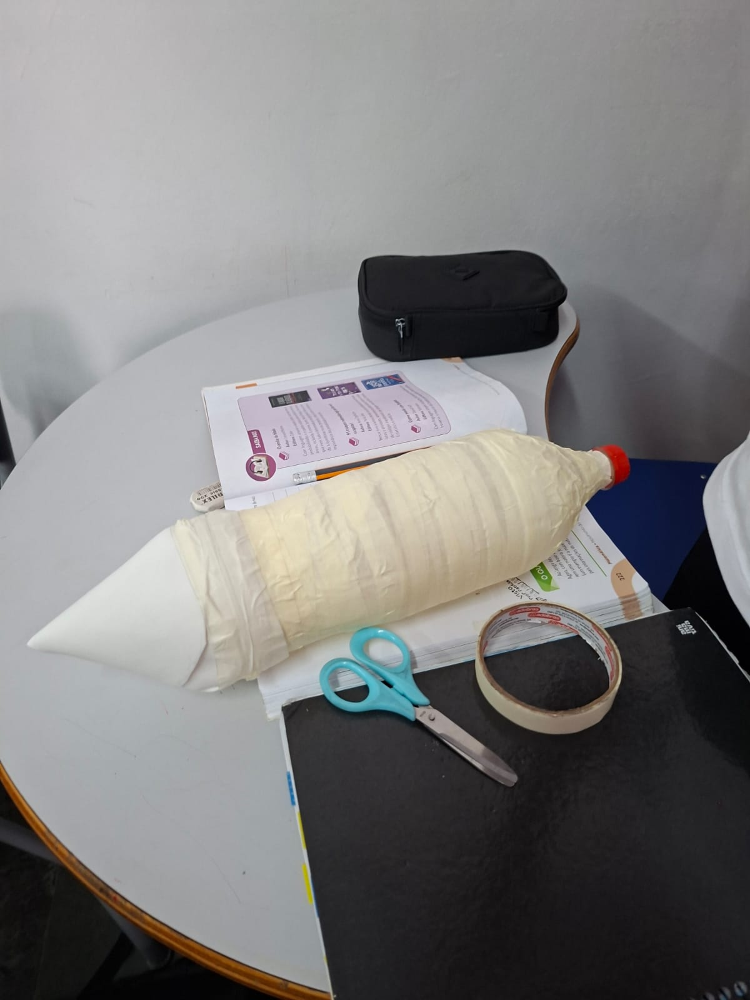
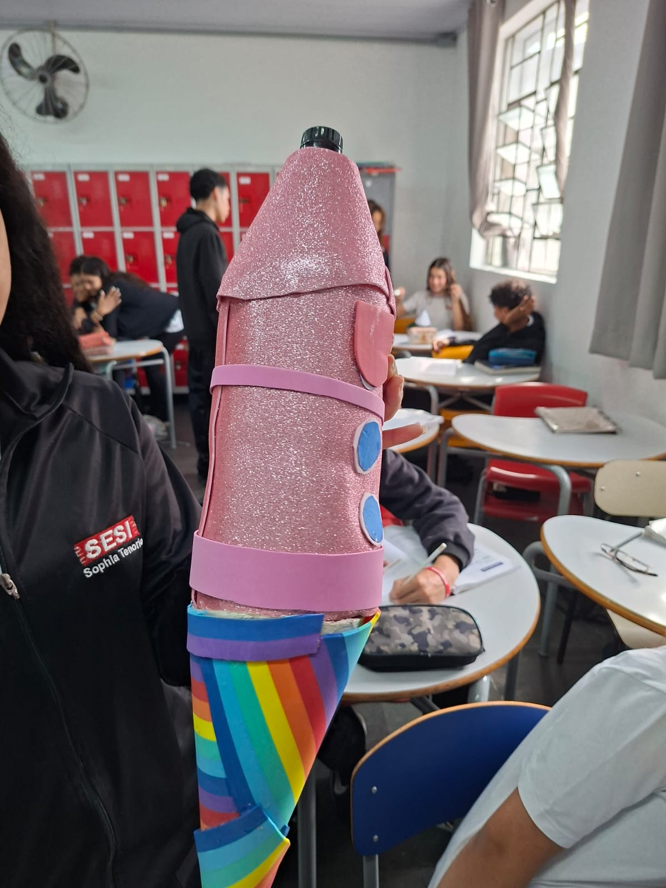
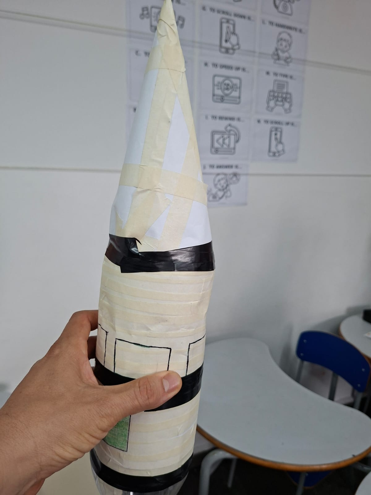
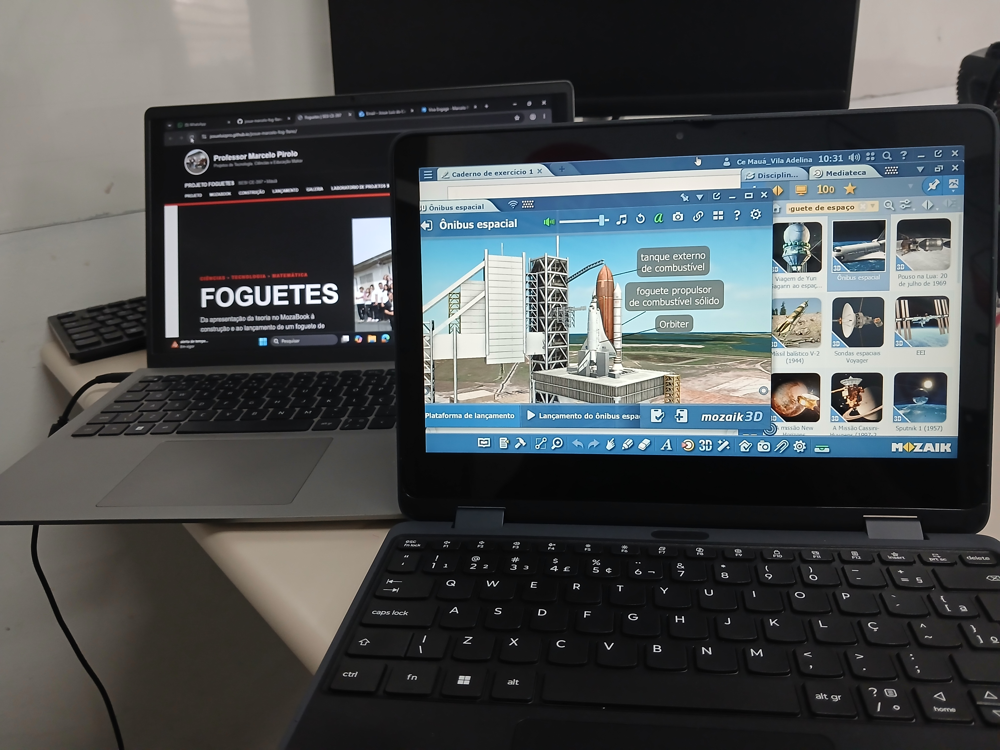

Planejar
Observar, discutir o funcionamento e planejar a construção do foguete.
Projetos de Tecnologia, Ciências e Educação Maker
Da apresentação da teoria no MozaBook à construção e ao lançamento de um foguete de garrafa PET.
Acompanhe os lançamentos Da curiosidade à experimentação
Da curiosidade à experimentaçãoUma experiência interdisciplinar que aproxima os estudantes dos conceitos científicos relacionados aos foguetes e transforma o conhecimento em investigação, construção e experimentação.

Durante a aula de Ciências, o professor Marcelo apresenta aos estudantes os conteúdos relacionados aos foguetes utilizando os recursos interativos do MozaBook.
A exploração de imagens, vídeos, animações e modelos tridimensionais aproxima os estudantes dos conceitos que serão observados posteriormente na experiência prática.
.jpg)
Antes de construir, os estudantes exploram o tema no ambiente digital, visualizando conceitos de forma concreta e interativa.
Teoria, visualização e investigação.
O MozaBook contribui para conectar o conteúdo apresentado pelo professor à etapa de construção e experimentação.
Observar, discutir o funcionamento e planejar a construção do foguete.
Utilizar garrafa PET e materiais adequados para montar o protótipo.
Preparar o lançamento, observar o comportamento do foguete e registrar a experiência.
A parceria com a Matemática permite relacionar o lançamento do foguete à representação de uma função quadrática e à trajetória parabólica.
Mais um foguete foi preparado e lançado, e os estudantes acompanharam de perto todo o processo. Foi um momento de curiosidade para observar até onde o foguete conseguiria chegar.
Neste lançamento, os estudantes puderam acompanhar na prática o resultado da experiência. A expectativa antes do lançamento e a reação depois do voo deixaram a atividade ainda mais divertida.
A cada lançamento, os estudantes ficavam mais envolvidos com a atividade. Eles observavam o foguete, comentavam sobre o resultado e imaginavam como seria o próximo lançamento.
Neste momento, a turma acompanhou mais um lançamento e pôde observar o comportamento do foguete durante o voo. A atividade trouxe animação e curiosidade para todos.
Neste lançamento, a turma acompanhou mais uma tentativa com bastante atenção. A contagem regressiva aumentou a expectativa e, quando o foguete subiu, a comemoração foi geral.
Essa sequência de experiências teve muita animação. Foram oito lançamentos e, principalmente, uma oportunidade de aprender Ciências colocando a mão na massa.
Mais um lançamento realizado com a turma, sempre acompanhado de expectativa. Cada voo era uma nova oportunidade para observar e comparar os resultados.
Para finalizar, tivemos mais um lançamento que reuniu a turma em torno da experiência. Entre preparação, contagem regressiva e voo, a atividade deixou bons momentos registrados.
Imagens que registram a exploração, a participação e a aprendizagem.





Uma possibilidade de adaptação do projeto para acolher diferentes formas de participação.
Embora esta proposta não tenha sido desenvolvida com foco específico no DUA nesta turma, ela pode ser adaptada para ampliar a participação de estudantes com diferentes características, ritmos e formas de aprendizagem.
O tema pode ser apresentado por meio de imagens, vídeos, modelos tridimensionais e explicações acessíveis. Na etapa prática, os estudantes podem participar de diferentes maneiras: planejando, escolhendo materiais, montando partes do protótipo, observando o lançamento, registrando dados ou compartilhando suas descobertas.
Com orientações claras, recursos variados e tarefas flexíveis, o projeto pode oferecer diferentes caminhos para compreender os conceitos científicos e contribuir com o trabalho coletivo, respeitando as possibilidades de cada estudante.
Imagens, vídeos, demonstrações, modelos 3D e explicações em diferentes formatos.
Construir, observar, planejar, registrar, organizar materiais ou relatar descobertas.
Escolhas, colaboração e desafios ajustados para favorecer o interesse e a autonomia.